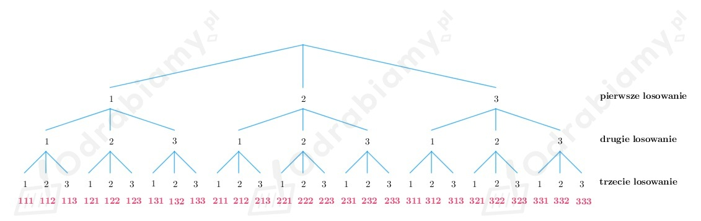

Z treści zadania wiemy, że rzucamy trzy razy kostką.
Otrzymane kolejno liczby oczek tworzą liczbę trzycyfrową.
Wiemy, że rzucając kostką możemy otrzymać jedną liczbę ze zbioru {1, 2, 3, 4, 5, 6}, zatem
rzucając trzy razy kostką za każdym razem mamy 6 możliwości wyrzucenia liczby oczek, więc
wszystkich liczb trzycyfrowych utworzonych z liczb wyrzuconych oczek na kostce
mamy łącznie:
Sprawdzamy, ile wśród możliwych wyników jest liczb parzystych.
Aby liczba trzycyfrowa była parzysta, to cyfrą jedności musi być cyfra parzysta.
Zatem za trzecim razem w rzucie kostką musimy otrzymać liczbę oczek 2 lub 4 lub 6.
Wobec tego liczb trzycyfrowych spełniających warunki zadana, które są parzyste mamy łącznie:
Sprawdzamy, ile wśród możliwych wyników jest liczb większych od 500.
Aby liczba trzycyfrowa była większa od 500, to jej cyfrą setek musi być cyfra 5 lub 6.
Wobec tego liczb trzycyfrowych spełniających warunki zadania, które są większe od 500 mamy łącznie:
Liczby czterocyfrowe możemy utworzyć z cyfr ze zbioru {0, 1, 2, 3, 4, 5, 6, 7, 8, 9} pamiętając, że
cyfrą tysięcy nie może być cyfra 0.
a)
Jeżeli pierwsza cyfra (cyfra tysięcy) jest nieparzysta, to może być to liczba ze zbioru {1, 3, 5, 7, 9}.
Natomiast pozostałe cyfry muszą być parzyste, więc wybieramy je ze zbioru {0, 2, 4, 6, 8}.
W związku z powyższym liczb czterocyfrowych spełniających warunki zadania mamy łącznie:
b)
Jeżeli pierwsza i druga cyfra (cyfra tysięcy i cyfra setek) jest parzysta, to cyfrą tysięcy może być
liczba ze zbioru {2, 4, 6, 8}, natomiast cyfrą setek może być cyfra ze zbioru {0, 2, 4, 6, 8}.
Natomiast pozostałe cyfry muszą być nieparzyste, więc wybieramy je ze zbioru {1, 3, 5, 7, 9}.
W związku z powyższym liczb czterocyfrowych spełniających warunki zadania mamy łącznie:
Liczby sześciocyfrowe możemy utworzyć z cyfr ze zbioru {0, 1, 2, 3, 4, 5, 6, 7, 8, 9} pamiętając, że
pierwszą cyfrą nie może być cyfra 0.
a)
Jeżeli pierwsza i ostatnia cyfra są takie same, to może być to cyfra ze zbioru {1, 2, 3, 4, 5, 6, 7, 8, 9}.
Czyli pierwszą cyfrę wybieramy na 9 sposobów (pierwszą cyfrą nie może być zero), natomiast ostatnią cyfrę
wybieramy na 1 sposób (bo musi być to ta sama cyfra, która jest na pierwszym miejscu).
W związku z powyższym liczb sześciocyfrowych spełniających warunki zadania mamy łącznie:
b)
Jeżeli pierwsza i druga cyfra są takie same, to może być to cyfra ze zbioru {1, 2, 3, 4, 5, 6, 7, 8, 9}.
Czyli pierwszą cyfrę wybieramy na 9 sposobów (pierwszą cyfrą nie może być zero), natomiast drugą cyfrę
wybieramy na 1 sposób (bo musi być to ta sama cyfra, która jest na pierwszym miejscu).
Jeżeli ostatnie dwie cyfry (piąta i szósta cyfra) są takie same, to może być to cyfra ze zbioru
{0, 1, 2, 3, 4, 5, 6, 7, 8, 9}. Czyli piątą cyfrę wybieramy na 10 sposobów, natomiast szóstą cyfrę
wybieramy na 1 sposób (bo musi być to ta sama cyfra, która jest na piątym miejscu).
W związku z powyższym liczb sześciocyfrowych spełniających warunki zadania mamy łącznie:
Należy ustalić, ile jest liczb czterocyfrowych, które spełniają podany warunek.
Liczby tworzymy z cyfr ze zbioru {0, 1, 2, 3, 4, 5, 6, 7, 8, 9}.
a)
Cyfra dziesiątek jest większa o 4 od cyfry jedności.
Aby cyfra dziesiątek była większa od cyfry jedności o 4, to cyfrą jedności musi być cyfra
należąca do zbioru {0, 1, 2, 3, 4, 5}, bo jeśli cyfrą jedności będzie cyfra większa od 5, to
cyfra dziesiątek będzie liczbą większą od 10, co prowadzi do sprzeczności.
Wobec tego cyfrę tysięcy możemy wybrać na 9 sposobów, cyfrę setek możemy wybrać na 10 sposobów,
natomiast cyfrę jedności możemy wybrać na 6 sposobów, a cyfrę dziesiątek na 1 sposób (jest ona
uzależniona od wyboru cyfry jedności).
Wnioskujemy, że wszystkich liczb czterocyfrowych spełniających warunki zadania mamy łącznie:
b)
Cyfra dziesiątek jest o 2 mniejsza od cyfry jedności.
Aby cyfra dziesiątek była mniejsza od cyfry jedności o 2, to cyfrą jedności musi być cyfra
należąca do zbioru {2, 3, 4, 5, 6, 7, 8, 9}, bo jeśli cyfrą jedności będzie cyfra mniejsza od 2, to
cyfra dziesiątek będzie liczbą mniejsza od 0, co prowadzi do sprzeczności.
Wobec tego cyfrę tysięcy możemy wybrać na 9 sposobów, cyfrę setek możemy wybrać na 10 sposobów,
natomiast cyfrę jedności możemy wybrać na 8 sposobów, a cyfrę dziesiątek na 1 sposób (jest ona
uzależniona od wyboru cyfry jedności).
Wnioskujemy, że wszystkich liczb czterocyfrowych spełniających warunki zadania mamy łącznie:
a)
Liczby tworzymy z cyfr należących do zbioru {0, 1, 2, 3, 4, 5 6, 7, 8, 9}.
Obliczamy, ile jest liczb trzycyfrowych podzielnych przez 5.
Aby liczba była podzielna przez 5, to jej cyfrą jedności musi być cyfra 5 lub 0, wobec tego
cyfrę jedności możemy wybrać na 2 sposoby.
Cyfrą setek nie może być cyfra 0, więc cyfrę setek możemy wybrać na 9 sposobów.
Natomiast cyfrę dziesiątek możemy wybrać na 10 sposobów.
Wszystkich liczb trzycyfrowych podzielnych przez 5 mamy łącznie:
co należało uzasadnić.
b)
Obliczamy, ile jest liczb pięciocyfrowych podzielnych przez 5, w których zapisie mogą
występować cyfry 0, 1, 2, 3, 4, 5.
Aby liczba była podzielna przez 5, to jej cyfrą jedności musi być cyfra 5 lub 0, wobec tego
cyfrę jedności możemy wybrać na 2 sposoby.
Cyfrą dziesiątek tysięcy nie może być cyfra 0, więc cyfrę dziesiątek tysięcy możemy
wybrać na 5 sposobów. Cyfrę tysięcy, setek i dziesiątek możemy wybrać na 6 sposobów.
Wszystkich liczb pięciocyfrowych spełniających warunki zadania mamy łącznie:
co należało uzasadnić.
a)
Korzystając z drzewa przedstawionego obok treści zadania wnioskujemy, że możliwe wyniki doświadczenia
polegającego na trzykrotnym rzucie monetą, to:
(o, o, o), (o, o, r), (o, r, o), (o, r, r), (r, o, o), (r, o, r), (r, r, o), (r, r, r)
b)
Za każdym razem możemy wyrzucić orła albo reszkę, więc możemy dostać wynik na 2 sposoby.
Jeżeli pięć razy rzucimy monetą, to możliwych wyników mamy łącznie:
Jeżeli dziesięć razy rzucimy monetą, to możliwych wyników mamy łącznie:
W urnie są trzy kule oznaczone numerami 1, 2 i 3. Trzykrotnie wyciągamy kulę, zapisujemy
jej numer i zwracamy ją do urny.
a)
Rysujemy drzewo ilustrujące wszystkie możliwe wyniki doświadczenia.

b)
Liczby parzyste, to liczby, których cyfra jedności jest cyfrą parzystą.
Zatem w przypadku tego doświadczenia liczbami parzystymi są liczby, których
cyfrą jedności jest cyfra 2.
Z drzewa odczytujemy, że w wyniku doświadczenia możemy otrzymać 9 liczb
parzystych (są to liczby: 112, 122, 132, 212, 222, 232, 312, 322, 332).
c)
Liczby podzielne przez 6, to liczby, które są podzielne przez 3 (suma jej cyfr jest podzielna przez 3)
i 2 (jest to liczba parzysta).
Z drzewa odczytujemy, że w wyniku doświadczenia możemy otrzymać 3 liczby podzielne
przez 6 (są to liczby:132, 222, 312).